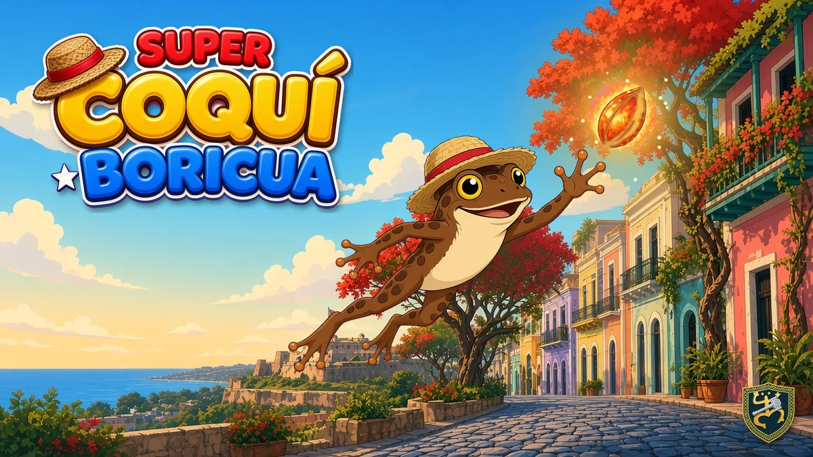
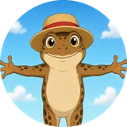
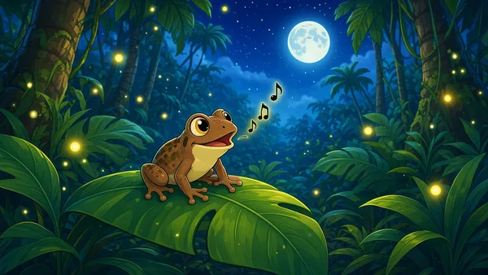
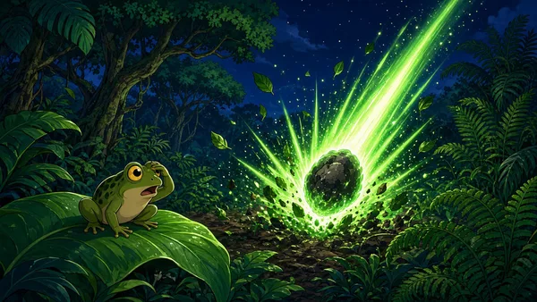

About the studioSobre nosotros
A small indie studio from a Puerto Rican developer who grew up on 80s cartoons, arcade side-scrollers, and the song of the coquí at night.
The name comes from two places. The Taíno were the first people of Borikén, and their petroglyphs still mark the rocks at Caguana. A forge is where things get made by hand, slowly and with care. Our shield logo puts both together: a Taíno coquí carved in gold, crossed by a hammer.
That's how we build games. We take the stories, sounds, food, and folklore of the island and hammer them into something you can pick up and play, whether you grew up on the island or anywhere else in the world.
Un pequeño estudio independiente de un desarrollador puertorriqueño que creció con los muñequitos de los 80, los juegos de plataforma y el canto del coquí de noche.
El nombre une dos cosas. Los taínos fueron el primer pueblo de Borikén, y sus petroglifos todavía marcan las piedras de Caguana. Una fragua es donde las cosas se hacen a mano, con calma y con cariño. Nuestro escudo une ambas: un coquí taíno tallado en oro, cruzado por un martillo.
Así hacemos juegos: tomamos las historias, los sonidos, la comida y el folclor de la isla y los forjamos en algo que puedes jugar.


Super Coquí
Boricua
A side-scrolling platformer across Puerto Rico. The chupacabras stole the magic flamboyán seeds, and a little coquí in a straw pava has to get them back, from Old San Juan to El Yunque and beyond. With salsa, plena, bomba and seis on the soundtrack.
Un juego de plataformas por todo Puerto Rico. Los chupacabras se robaron las semillas mágicas del flamboyán, y un coquí con su pava tiene que recuperarlas, desde el Viejo San Juan hasta El Yunque y más allá. Con salsa, plena, bomba y seis.


Say hello.Escríbenos.
Press, players, and fellow devs welcome.Prensa, jugadores y otros desarrolladores, ¡bienvenidos!
admin@tainoforge.com